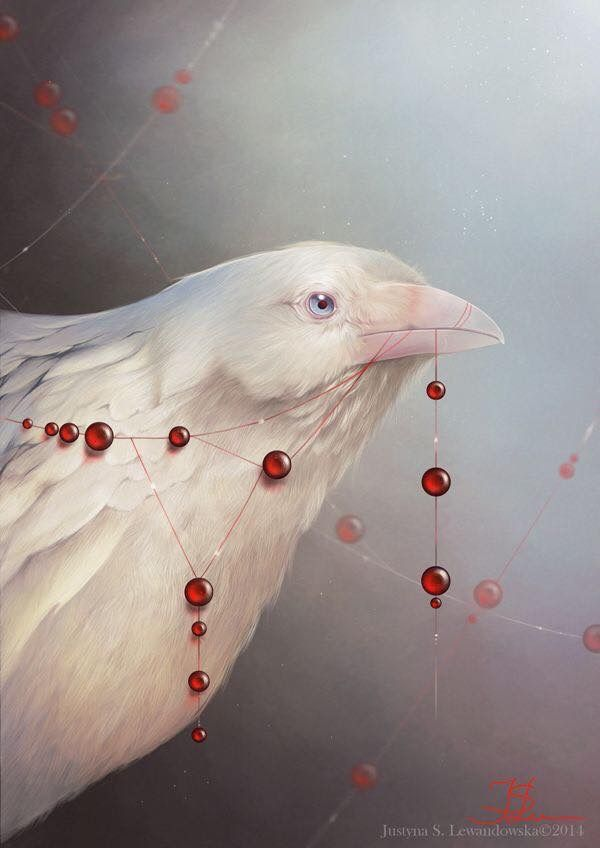

О разработчике

Меня зовут Казакова Валерия, я студентка 3 курса кафедры «Информационные технологии и программирование». Увлекаюсь веб-разработкой, дизайном и историей родного края.
Данный сайт создан в рамках лабораторной работы по дисциплине «Веб-технологии». Проект посвящён истории и культуре города Артёмовск (бывший Бахмут) — одного из старейших городов Донбасса.
В своей работе я использовал семантическую разметку HTML5, современные возможности CSS (Flexbox, Grid, position, float, псевдоклассы и псевдоэлементы), а также адаптивную вёрстку для корректного отображения на мобильных устройствах.
Уровень владения профессиональными навыками
Мои контакты
Электронная почта
valerialazakova2503@yandex.ru
Telegram
@MrsLaufeyson